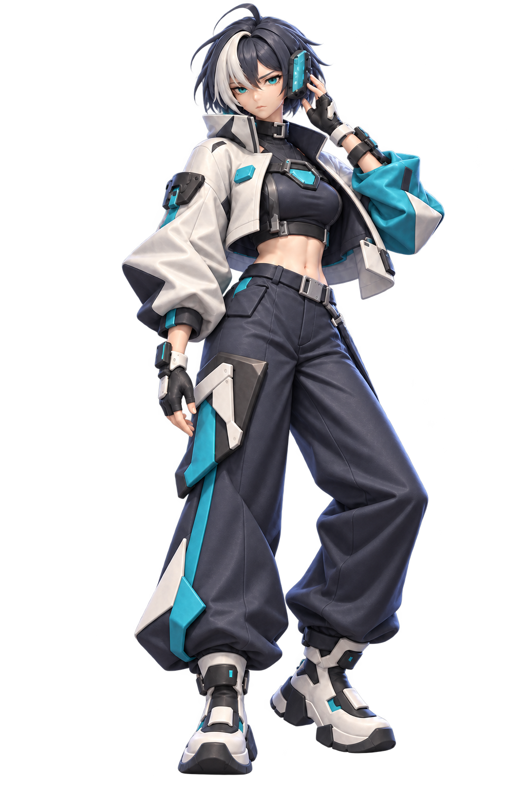
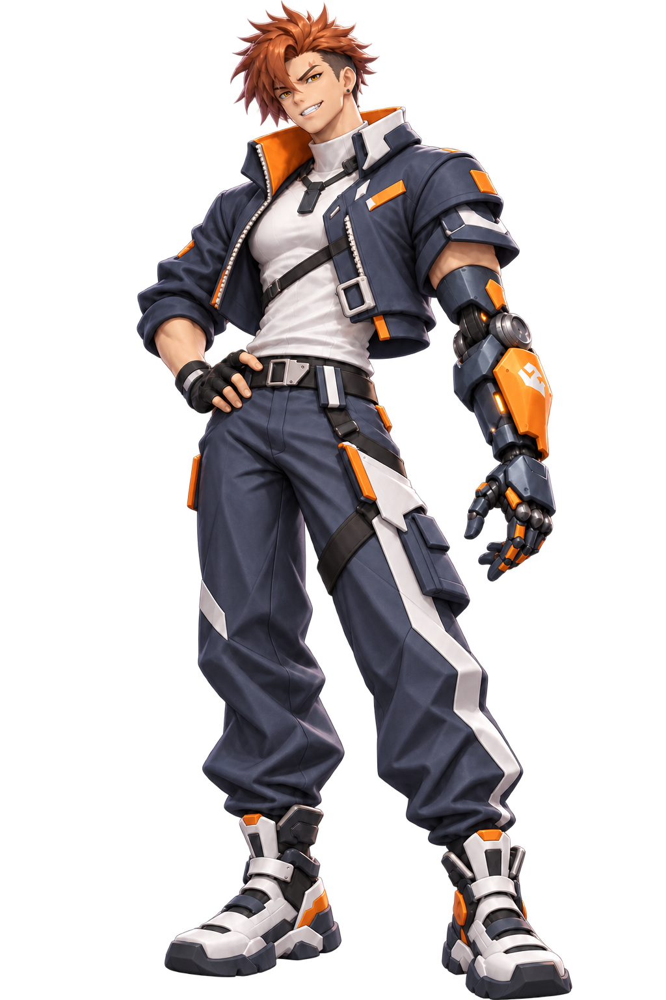
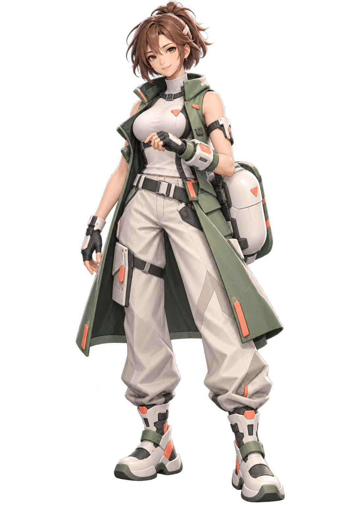
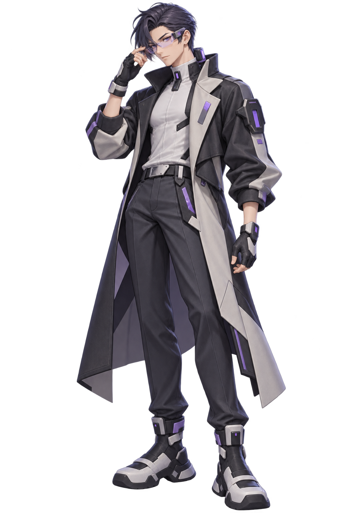
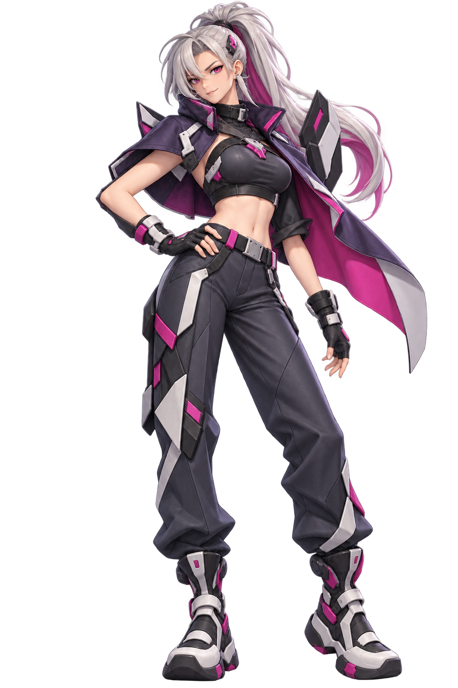
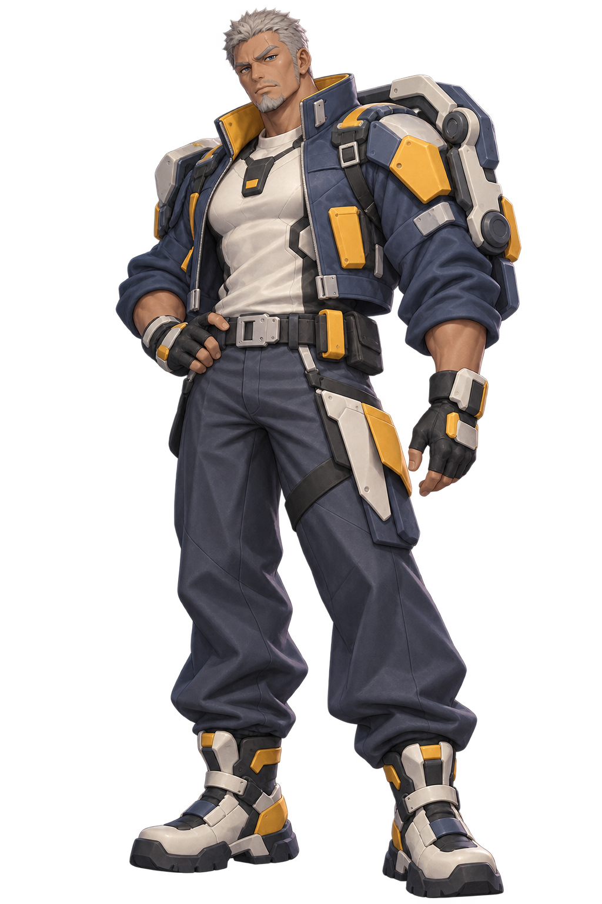

01 · 凛音
米白 / 深蓝 / 青 · 单侧光学数据耳机
六张略偏3D的全身立绘，六张偏2D的二游头像。人物身份、发型、配色与装备标识逐一对应。






米白 / 深蓝 / 青 · 单侧光学数据耳机
深蓝 / 灰白 / 橙 · 左机械前臂
鼠尾草绿 / 米白 / 珊瑚 · 胶囊式救援模块
炭黑 / 灰白 / 紫 · 透明AR眼镜与后颈数据模组
炭灰 / 银白 / 粉紫 · 折叠通信背板
钢蓝 / 灰白 / 芥黄 · 承重式肩背外骨骼